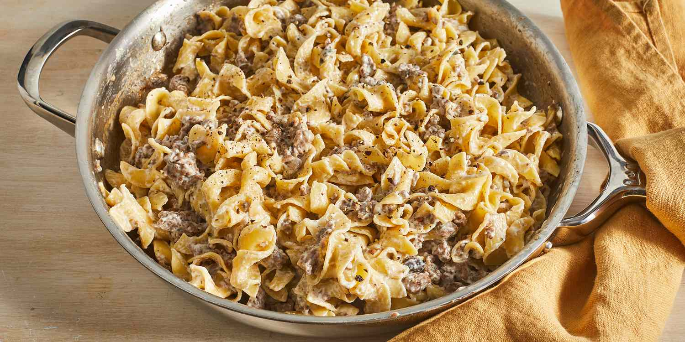

Ground Beef Stroganoff

Description
This stroganoff recipe is a 10/10.
Ingredients
- 1/2 lb white button mushroom sliced
- 2 tbsp olive oil
- 1/4 tsp salt
- 1 onion
- 2 cloves garlic
- 1/2 tsp pepper
- 1/2 tsp salt
- 3 tbsp flour
- 1 lb 85% ground beef
- 1/4 cup white wine
- 4 cup chicken broth
- 8 ounces egg noodle
- 1/2 cup yogurt
Steps
-
Simmer 1 tbsp of olive oil in a pot over medium-high heat. Add the
mushrooms and 1/4 tsp salt. Let mushrooms cook, stirring occasionally
for 5-7 minutes, until liquid has evaporated and the mushrooms are
beginning to brown. Transfer the mushrooms to a separate bowl and set
aside.
-
In the same pot, over medium heat, add another tbsp of olive oil, 1
finely chopped onion, 2 cloves of minced garlic, 1/2 tsp of pepper, and
1/2 tsp of salt. Cook until the onion is softened (around 5 minutes).
Add the ground beef to the pot and add 1/4 tsp of salt and pepper. Cook
the beef for 5-7 minutes until the ground beef is no longer pink.
-
Add flour to the beef to thicken the stroganoff (about 3 minutes). Add
1/4 cup of white wine and 4 cups of chicken broth. Make sure to scrape
the bottom of the pot. Cook for around 5 minutes or until the sauce is
slightly thickened.
-
Add 8 ounces of egg noodles directly to the pot. Cook the noodles
uncovered, stirring occasionally, for around 10-12 minutes.
-
Turn off the heat and add 1/2 cup of yogurt and the cooked mushrooms
from earlier. Stir everything together and plate it up.